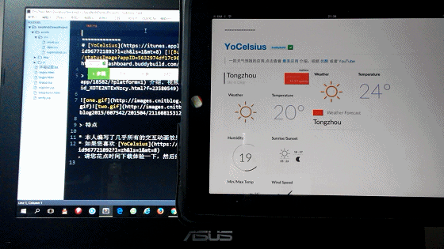

自从接触到Sublime Text，它就一直是我最喜欢用的编辑器之一。清爽简洁的界面、异常强大的插件扩展能力，都让我爱不释手。
而Markdown语言是我很久之前就听说过的轻量级标记语言，开通CSDN的第一篇博客就是转载了CSDN-Markdown编辑器的“说明书”，这也加深了我对Markdown的印象，但其实我对它仍是一无所知。今天机缘巧合，在github上看到别人的README文件做得丰富精彩，而我的却是普通纯文本枯燥无味。深入了解才发现，原来.md就是Markdown文件的后缀啊，亏我一直把它当txt文本来用。。。
“知道真相的我忍不住眼泪流下来……”赶紧学习学习，研究一下怎么用Sublime Text编辑Markdown吧。
嗯嗯，今天就来简单聊聊Sublime Text 3 + OmniMarkupPreviewer体验。
一.Sublime Text
搞双系统时折腾过一段时间，所以大概有四五次安装Sublime Text的经验，现在用Sublime Text 3。网上关于Sublime Text的介绍有很多，所以在这里也就不罗嗦了。
关于插件，这里有一份被总结得很好的Sublime Text 3插件入门教程：戳这里
虽然说教程介绍的是“前端”开发常用的插件，但方法类似，无论是用哪种流行的语言开发，都能在网上找到前辈们开发的插件，或者进阶一点的，可以用Python自己写一个。所以说，Sublime Text在这方面上真的很强大。
二、OmniMarkupPreviewer插件
OmniMarkupPreviewer插件简介：作为 Sublime Text 的一款强大插件，支持将标记语言(Markdown仅是其中一种)渲染为 HTML 并在浏览器上实时预览，同时支持导出 HTML 源码文件。
具体的？这里有一份总结的很好的教程：戳这里
里面的一段话我很感兴趣：
"server_host": "192.168.1.100",
view plain copy
开启预览服务的 IP 地址, 默认为 localhost.
此处建议设置为本机固定 IP. 其好处在于：从局域网内的任意一台设备均可访问，可多设备同时在线，实现 一处编辑、多端预览 的效果。
你完全可以在 Mac 上编辑 Markdown 文档，而把 iPad 当作外接显示器来实时预览。
首先这个IP地址是局域网网关地址，学业不精的我天真地以为是全局IP，折腾了好一会儿。
（可以在CMD输入ipconfig来查看，是类似192.168.X.X这样的形式）
然后就是体验啦：

真的很棒！！！很赞的功能有木有！！！
嗯，今天就唠叨到这吧。有时间有机会要认真了解一下Markdown语法。